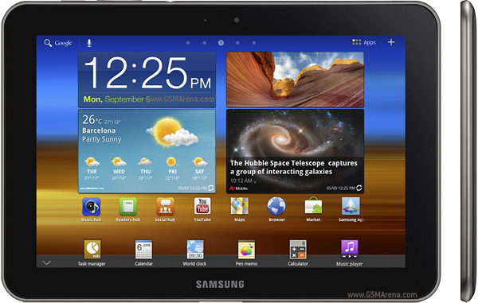

삼성 갤럭시 탭 8.9
1. 외관

삼성전자가 2011년 10월과 12월에 SK텔레콤, KT, LG유플러스를 통해 출시한 안드로이드 태블릿.
2. 사양
| 프로세서 | nVIDIA Tegra 2 T20 SoC. ARM Cortex-A9 MP2 1 GHz CPU, ULP GeForce 333 MHz GPU | ||
| 메모리 | 1 GB LPDDR2 SDRAM, 16 / 32 GB 내장메모리 | ||
| 디스플레이 |
8.9인치 WXGA(1280 x 800) RGB 서브픽셀 방식의 삼성 Super PLS LCD 멀티터치 지원 정전식 터치 스크린 |
||
| 네트워크 | 기본 | LTE Cat.3, HSPA+ 21Mbps, HSDPA & HSUPA & UMTS, GSM & EDGECDMA & EV-DO Rev. A | Wi-Fi 802.11a/b/g/n, 블루투스 3.0+HS |
| - | - | ||
| 카메라 | 전면 200만 화소, 후면 300만 화소 AF | ||
| 배터리 | 내장형 Li-lon 6100 mAh | ||
| 운영체제 | 안드로이드 3.2 (Honeycom) → 4.0 (Icecream Sandwich) | ||
| 규격 | 157.8 x 230.9 x 8.6 mm, 457 g | ||
3. 상세
2011년 3월 23일 북미이동통신전시회(CTIA) 2011 행사에서 갤럭시 탭 10.1과 함께 공개되었다. 실사용자 반응이라며 인터뷰 영상을 공개했는데 이들이 실은 배우인 것이 적발되어 언플 딱지가 붙었다. 광고기법 중에는 모큐멘터리도 있기는 하나, 영상을 소개하면서 실사용자라고 발언한 것이 문제가 되었다. 또한 갤탭 광고에 등장한 소녀가 알고 보니 애플 아이폰 4S 광고에도 등장하여 논란이 되었다.